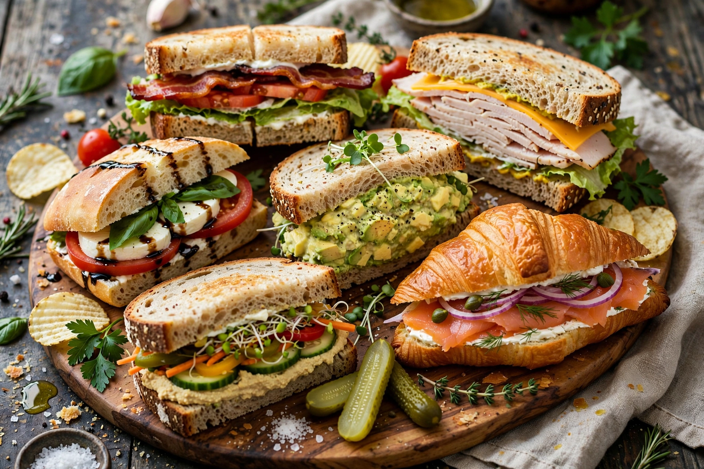

A sandwich is a food typically consisting of vegetables, sliced cheese or meat, placed on or between slices of bread, or more generally any dish wherein bread serves as a container or wrapper for another food type. The sandwich began as a portable finger food in the Western world, though over time it has become prevalent worldwide. This list includes notable sandwich types from many cuisines.
| Name | Origin | Description |
|---|---|---|
| Bánh mì | Vietnam | Baguette with pâté, meats, pickled vegetables, coriander and chilli |
| BLT | United States | Bacon, lettuce and tomato, usually with mayonnaise |
| Bocadillo | Spain | Baguette-style sandwich with fillings such as tortilla, calamari or serrano ham |
| Club sandwich | United States | Double-decker with turkey or chicken, bacon, lettuce and tomato |
| Croque-monsieur | France | Grilled ham and cheese, topped with béchamel; with a fried egg it becomes a croque-madame |
| Cuban sandwich | Cuba / Florida | Pressed ham, roast pork, Swiss cheese, pickles and mustard on Cuban bread |
| Döner kebab sandwich | Turkey / Germany | Sliced rotisserie meat in flatbread with salad and sauces |
| Falafel wrap | Middle East | Fried chickpea balls with salad and tahini in pita |
| Grilled cheese | United States | Melted cheese between buttered, griddled bread |
| Gyro | Greece | Rotisserie meat in pita with tomato, onion and tzatziki |
| Hamburger | United States / Germany | Ground-beef patty in a bun with various toppings |
| Katsu sando | Japan | Breaded fried pork cutlet with cabbage and tonkatsu sauce on milk bread |
| Panini | Italy | Grilled sandwich on ciabatta or similar bread |
| Peanut butter and jelly | United States | Peanut butter and fruit preserves on sliced bread |
| Philly cheesesteak | United States (Philadelphia) | Thin-sliced beefsteak and melted cheese in a hoagie roll |
| Po' boy | United States (Louisiana) | Fried seafood or roast beef on New Orleans French bread |
| Reuben | United States | Corned beef, Swiss cheese, sauerkraut and dressing on grilled rye |
| Shawarma | Levant | Marinated spit-roasted meat shaved into flatbread |
| Smørrebrød | Denmark | Open-faced sandwiches on rye bread with varied toppings |
| Submarine sandwich | United States | Long roll filled with meats, cheese, vegetables and condiments |
| Torta | Mexico | Sandwich on a crusty white roll with meats, beans and avocado |
| Vada pav | India (Mumbai) | Spiced potato fritter in a bread roll with chutneys |